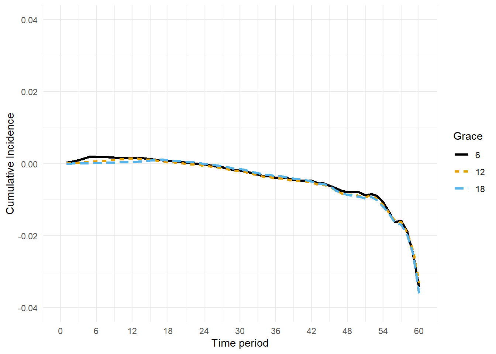
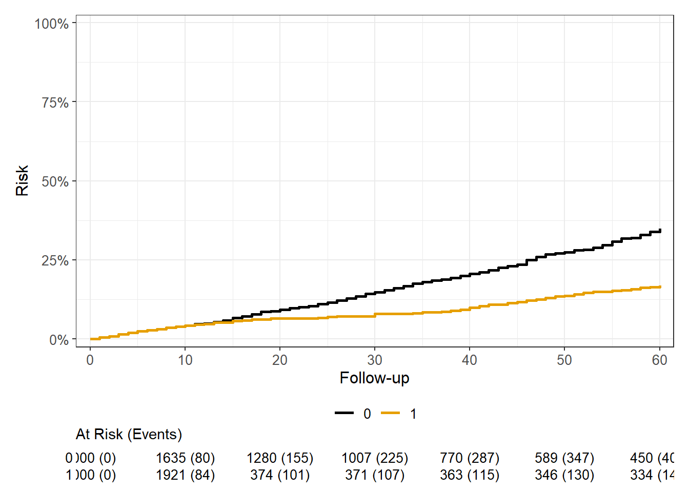
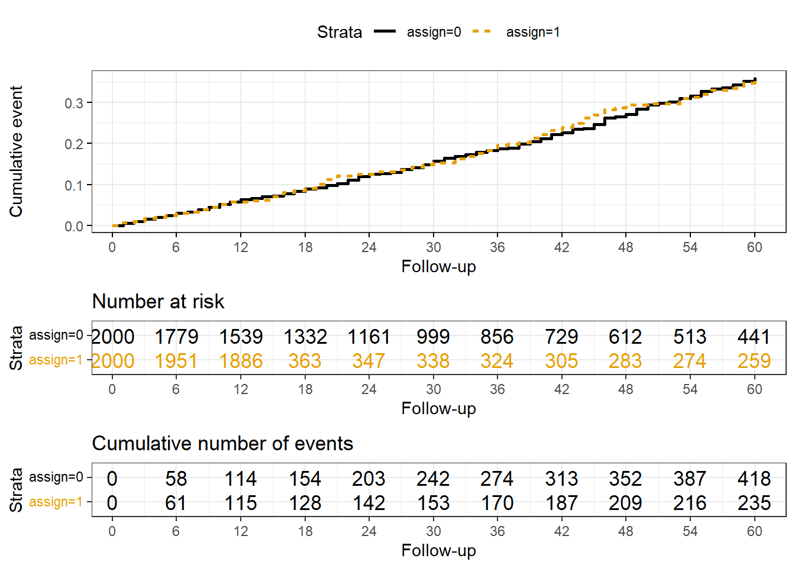
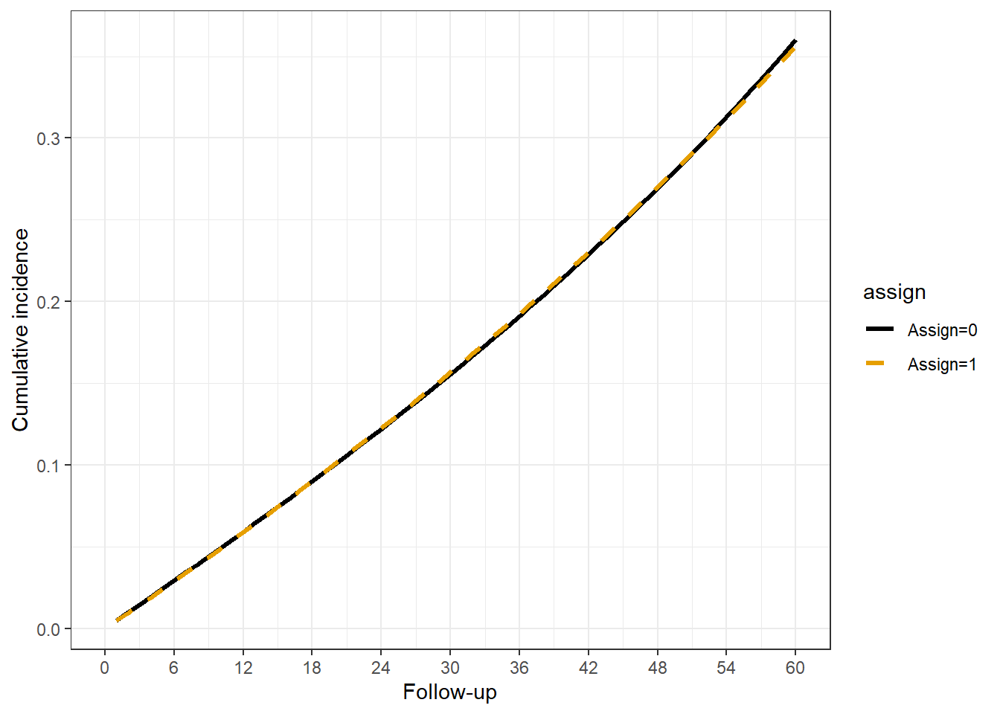
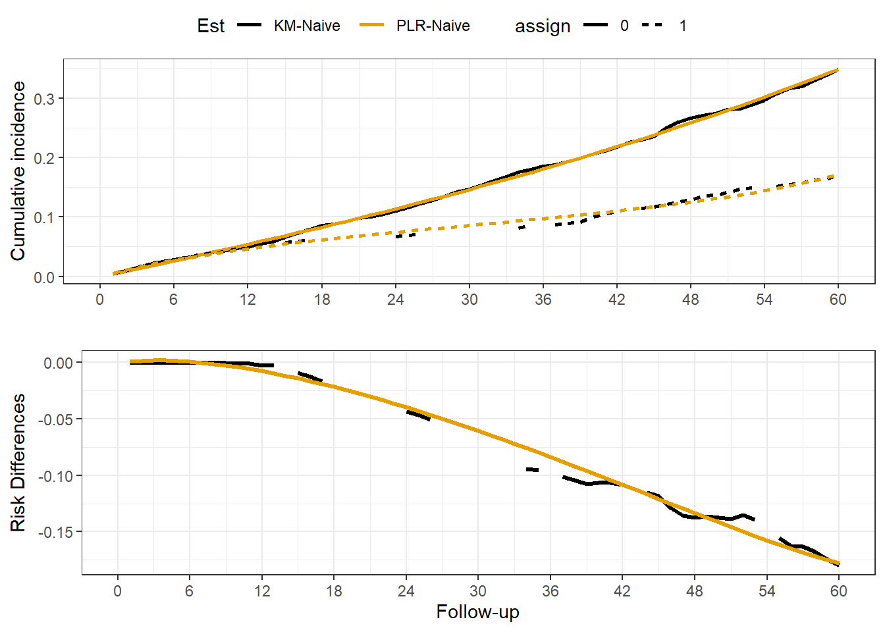
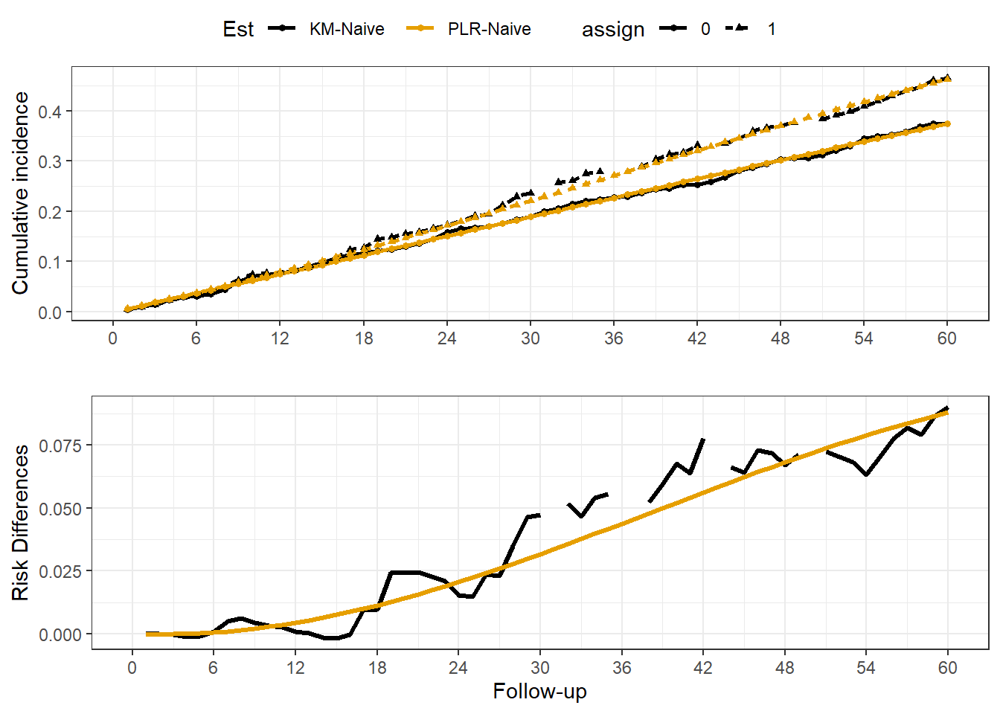

Warning: Unknown or uninitialised column: `marg_ipw`.
Unknown or uninitialised column: `marg_ipw`.Length Class Mode
0 NULL NULL Sensitivity analyses and Troubleshooting
The selection of a grace period is ideally based on knowledge of the treatment in real-world use. For example, if there were treatment guidelines recommending an intervention take place within a specific time-frame (6 weeks from hospital discharge, 1 hour from presentation in the ED etc.), then it makes sense to follow that recommendation in selecting a grace period. However, practical limitations may change this for a project. Even though it may be recognized that 6 weeks is recommended, maybe very few initiate that early and 12 weeks captures more treated cases.
Whatever period is selected, a sound practice is to evaluate how different results appear when different grace periods are selected. It is simplest when the time-frame doesn’t change the estimated effect very much, but a variety of things could impact this. For example, if probability of initiation of treatment varies widely across time due to confounding or some general time-trend then selecting different grace windows could substantially change results. Additionally, if the many events occur early after time-zero, then grace windows will count most of these events in both arms so your estimate of treatment grace period effects could be more conservative than actual treatment initiation.
Another way of thinking about these issues of how to define treatment, grace periods etc. is in terms of relevance. Your defined intervention must be relevant to the risk for disease, and treatment strategies that are actually used in the real-world.
The original dataset is setup with a 12-unit grace period, I create two new datasets with 6 and 18-unit grace periods for comparison. A helper function for this is in the ’~ folder: mk_grace_chk.R. For brevity, I only use the ay dataset, where treatment has a causal effect on Y.

Description. Each line presents the cumulative risk difference across time, using different definitions of the treatment intervention. In this case, it makes little difference, which is sensible because the synthetic data did not generate time-varying risks for the outcome or treatment initiation.
It is important to explore the data with a “naive” estimator. This is useful for the following reasons:
It allows examination of the overall time trends, censoring and sample size which can reveal fatal issues with the target trial emulation. For example, treatment is too rare in the grace window used, or event rate is unexpectedly high or low.
The non-parametric model allows a visual examination of the cumulative incidences (or event free survival probabilities) which are modeled parametrically in the pooled logistic regression. In other words, examining the time trend can help you determine if a simple polynomial or some more complex spline function is needed. This is not definitive however, because time-varying weights may change the time trends. But in my experience the unweighted curves provide a good starting point, and practitioners should be skeptical of a weighted analysis that shows dramatically different time trends then the unweighted analysis (likely to be poorly fit model).
The Kaplan-Meier Estimator section provides a working example on fitting a simple naive estimator. Here a helper function f_km_cuminc() is used for brevity.


Figure 1. Naive Kaplan-Meier Estimator
Next, we proceed to essentially replicate the finding of the KM estimator with a PLR model. No weights or covariate-adjustment is applied yet. The weighting is computationally intensive and so this step is important to test your code. The goal is to ensure you have a good starting parametric model for the outcome to avoid complications when you add weights. An unadjusted PLR model should closely approximate the KM curves, if it doesn’t then something is wrong. Either the time function is misspecified, data is too sparse (few events, follow-up exposure time etc.), or the code is wrong.
The Discrete Time Estimator section provides a working example. Here a helper function f_plr_cuminc() is used for brevity.
The PLR model requires specification of a function of time. Many start with a quadratic polynomial (i.e. time + time^2). In my own work, I have found this insufficient, and interestingly have found that linear splines work the best. You must decide for yourself. You could compute AIC or some other model fit statistic to select it empirically. I often compare the PLR estimates to the non-parametric estimates for validity. However this doesn’t completely avoid issues, because the weighted estimates (time-varying covariates, interactions with time etc.) could conceivably diverge quite a bit from the unadjusted KM estimator. You can either estimate the outcome in a model with both clones combined in one dataset OR estimate cumulative incidences separately (two models with data limited to assign==1 & assign==0 respectively). In the combined data, you must specify an interaction between treatment (clone assignment) and f(time), e.g. time + time^2 + treat + treat*time + treat*time^2, shorthand below is poly(time, 2, raw=T)*assign.


Figure 2. Unadjusted, unweighted cumulative incidences by treatment group (PLR)
d_ci_cmp = bind_rows(
select(d_mods, model, est_km) %>% unnest(cols = c(est_km)) %>%
mutate(Est = 'KM-Naive') %>%
select(model, Est, time, pr_ev_1, pr_ev_0, cid),
select(d_mods_pnl, model, est_plr_nv) %>% unnest(cols = c(est_plr_nv)) %>%
mutate(Est = 'PLR-Naive') %>%
select(model, Est, time, pr_ev_0, pr_ev_1, cid)
) %>%
pivot_longer(cols = c(pr_ev_0, pr_ev_1), names_to = 'assign',
names_prefix = 'pr_ev_', values_to = 'pr_ev') %>%
nest(data = -model)
d_gg = mutate(d_ci_cmp, km_gg = map(data, function(x) {
d_gg_ci = x %>%
ggplot(aes(x=time, color = Est, Group = Est)) +
geom_line(aes(y = pr_ev, linetype=assign), linewidth=0.9) +
geom_point(aes(y = pr_ev, shape=assign), size=1.2) +
scale_x_continuous(breaks = seq(0, 60, 6),
limits = c(0, 60)) +
scale_color_manual(values = cbbPalette) +
theme_bw() +
labs(x = '', y = 'Cumulative incidence')
d_gg_rr = x %>%
ggplot(aes(x=time, color = Est, Group = Est)) +
geom_line(aes(y = cid), linewidth=1.1) +
scale_x_continuous(breaks = seq(0, 60, 6),
limits = c(0, 60)) +
scale_color_manual(values = cbbPalette) +
theme_bw() +
labs(x = 'Follow-up', y = 'Risk Differences')
ggarrange(d_gg_ci, d_gg_rr, nrow=2, common.legend = T)
}))
d_gg$km_gg[[1]] # A -> Y
d_gg$km_gg[[2]] # X -> Y

Figure 3. Comparison of Naive PLR versus KM estimator
So the PLR model using a simple polynomial approximates the KM estimator. At this point it would be a project specific judgement whether to accept this, or test out other parametric functions. Consider the following regarding the parametric time trend:
It may not matter if PLR and KM are inconsistent at earlier time-points if the plan is to only summarize the results at later periods.
The non-parametric KM estimator may be imprecise with small sample sizes and/or rare outcomes. The risk difference estimates at each time-point may have considerable random variation, and the parametric model is essentially smoothing out this noise. So while they should be approximately the same, you do not want to overfit the random noise of the KM estimator.
These initial steps will not guarantee a good fit after weighting is applied, it is only a first-look for diagnostic purposes.
If the fit is not satisfying, then simply pick a different function of time. Many others to choose from, basis splines, bs::splines(time, df=6, degree=1), or you can use a mgcv() for penalized splines etc. Also, consider specifying knots at specific time-points like the end of a grace period.
Note the outcome regression without weights is just for comparison and understanding, the final analysis must include probability weights for artificial censoring even if no confounding.
Warning: Unknown or uninitialised column: `marg_ipw`.
Unknown or uninitialised column: `marg_ipw`.Length Class Mode
0 NULL NULL The unstabilized weights floor at 1, and we see high weights assigned to some. The marginal weights have a mean of 1 (expected).
The weights at the end of the grace period are key so its good to examine them directly:
You can also plot weights across time for diagnostics:
dta_c_panel %>%
dplyr::filter(marg_ipw!=0) %>%
ggplot(., aes(x = cut_width(time, 12), y = marg_ipw)) +
geom_violin(aes(group = cut_width(time, 12)),
scale = "width", fill = cbbPalette[1], alpha = 0.5) +
stat_summary(fun = "mean",
geom = "point",
color = cbbPalette[2], size=2) +
geom_hline(aes(yintercept=1),linewidth=1.1, linetype=3) +
scale_x_discrete(labels = seq(0, 60, 12)) +
labs(x = "Follow-up", y = "IPW", ) +
theme_bw()Another way to examine the weights is to look at the weighted counts of individuals at risk, and number of events pre- and post-weighting:
dta_c_panel %>%
group_by(time, assign) %>%
summarize(n = sum(ipw!=0),
n_wt = sum(ipw),
.groups = 'drop') %>%
pivot_wider(id_cols = time, names_from = assign, values_from = c(n, n_wt)) %>%
dplyr::filter(time %in% c(1, 12, 30, 60)) %>%
rename(`Time` = time,
`Unweighted, assign=0` = n_0,
`Unweighted, assign=1` = n_1,
`Weighted, assign=0` = n_wt_0,
`Weighted, assign=1` = n_wt_1,
) %>%
kable(align='c', digits =0) %>%
kable_styling()The size of the unweighted, and weighted counts may identify problems.